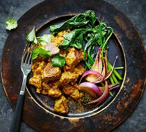

Lamb Vindaloo

Extremely hot and tasty!
Vindaloo or Vindalho is an Indian curry dish, originally from Goa. It is based on the Portuguese dish carne de vinha d'alhos. It is known globally in its British Indian form as a staple of curry house and Indian restaurant menus and is often regarded as a fiery, spicy dish
Ingredients
- 500g lamb neck fillet, cubed
- 120ml rapeseed oil
- 250g onions, sliced
- 4 garlic cloves, roughly chopped
- 25g ginger, roughly chopped
- 1 medium potato, diced
- 240ml stock (depending on the meat you’re using), warmed through
- 10g coriander, chopped, plus extra leaves to serve
- wilted greens and lightly fried red onion, to serve
For the curry paste
- 2 tsp cardamom pods shelled, seeds only
- 2 tsp cloves
- 2 tsp coriander seeds
- 1 tsp cumin seeds, toasted
- 1 tsp turmeric
- 1 tbsp malt vinegar
- 40g dried red chillies (adjust quantity to your taste)
Steps
- Blend the paste ingredients in a blender or bash using a pestle and mortar until smooth and combined. Rub half the paste into the lamb neck, cover and chill in the fridge overnight.
- Heat most of the oil in a heavy-bottomed saucepan over a medium heat. Add the onion, garlic and ginger, cook slowly until the onion is translucent, then add the remaining curry paste and mix well. Cook your spices for a few mins, allowing the flavours to really open up. Decrease the heat, fold the potato into your mix, season well and cook for 5 mins.
- Add the stock and simmer on a low heat until the potato is cooked, then lightly crush it. Add the chopped coriander, then remove from the heat and leave to cool. Chill in the fridge overnight.
- The next day, heat the remaining oil in a frying pan. Season the lamb, brown it all over and cook until tender. Reheat the sauce, and add the lamb and any juices. Serve topped with coriander, with some wilted greens and fried red onion on the side.
Homepage